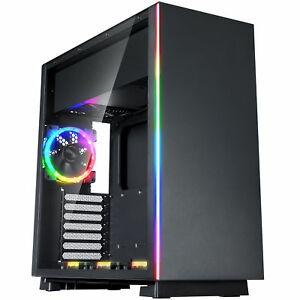

|  |
Il case e' la scatola, in genere metallica, che contiene le parti del computer.
Le sue funzioni sono di protezione ed isolamento elettrico delle parti,
inoltre fornisce il supporto meccanico per il montaggio delle varie componenti
ed in particolare della scheda madre. Abbiamo diverse tipologie per i case.
Il desktop ha forma rettangolare ed e' adatto a stare sulla scrivania,
a volte sotto il video. I vari tipi di "tower" : mini, midi, big tower, sono piu' grandi
e fatti per stare sul pavimento.